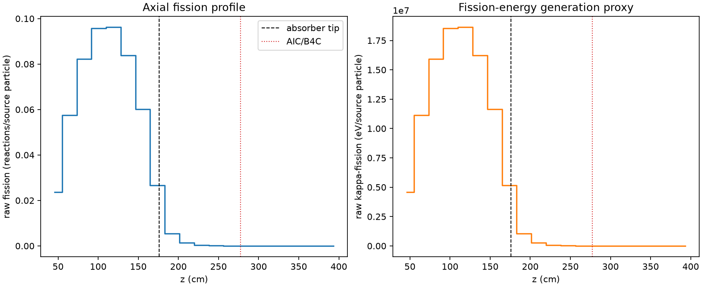
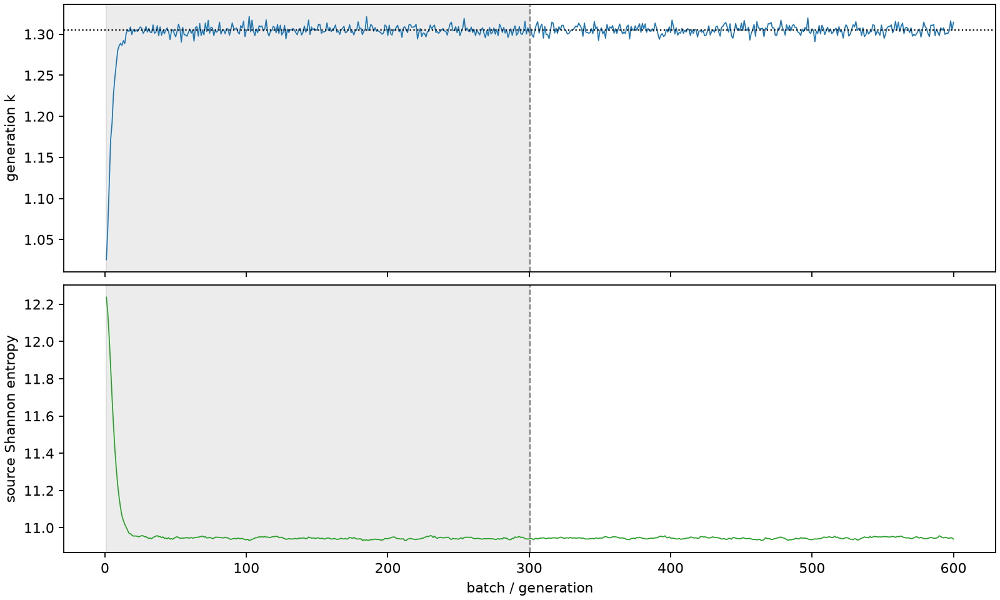

| field | value |
|---|---|
| experiment | V2-STAGE_256_OGRENCI_04-0016 |
| k | 1.3053260282252142 |
| MC standard error | 0.0001815996095860938 |
| seconds | 953.0430100930025 |
| acceptance | not_assessed |
| convergence | review_required |
Completed is output integrity only; physical and statistical review required. Zero tallies do not prove zero production or zero uncertainty.
| diagnostic | value |
|---|---|
| geometric fuel voxels | 5280 |
| zero fission tally voxels | 1261 |
| low signal fuel voxels | 2152 |
| low signal fission share | 8.120492367033872e-05 |
| low signal kappa share | 8.122454757582569e-05 |
| important fission share | 0.9500321659553028 |
| previous filter included | 3128 |
| duration estimate s | 1562.5173488400023 |
| actual minus estimate s | -609.4743387469998 |
| fission relative MC error | statistics |
|---|---|
| all_geometric_fuel | {"voxels": 5280, "positive_mean_voxels": 4019, "zero_mean_voxels": 1261, "undefined_relative_error_voxels": 1261, "median": 0.012169900344081436, "p95": 0.9121789020360374, "maximum": 1.0000000000000002} |
| low_signal | {"voxels": 2152, "positive_mean_voxels": 891, "zero_mean_voxels": 1261, "undefined_relative_error_voxels": 1261, "median": 0.5762468929558514, "p95": 1.0, "maximum": 1.0000000000000002} |
| important_95pct | {"voxels": 1894, "positive_mean_voxels": 1894, "zero_mean_voxels": 0, "undefined_relative_error_voxels": 0, "median": 0.006685739117386784, "p95": 0.011463183019277049, "maximum": 0.01313854328915164} |
| outside_previous_filter | {"voxels": 2152, "positive_mean_voxels": 891, "zero_mean_voxels": 1261, "undefined_relative_error_voxels": 1261, "median": 0.5762468929558514, "p95": 1.0, "maximum": 1.0000000000000002} |
| kappa_fission relative MC error | statistics |
|---|---|
| all_geometric_fuel | {"voxels": 5280, "positive_mean_voxels": 4019, "zero_mean_voxels": 1261, "undefined_relative_error_voxels": 1261, "median": 0.012156417002079171, "p95": 0.9127475670197712, "maximum": 1.0000000000000002} |
| low_signal | {"voxels": 2152, "positive_mean_voxels": 891, "zero_mean_voxels": 1261, "undefined_relative_error_voxels": 1261, "median": 0.5754276188490041, "p95": 1.0, "maximum": 1.0000000000000002} |
| important_95pct | {"voxels": 1894, "positive_mean_voxels": 1894, "zero_mean_voxels": 0, "undefined_relative_error_voxels": 0, "median": 0.006678620117405896, "p95": 0.011451017507158795, "maximum": 0.013124118823621383} |
| outside_previous_filter | {"voxels": 2152, "positive_mean_voxels": 891, "zero_mean_voxels": 1261, "undefined_relative_error_voxels": 1261, "median": 0.5754276188490041, "p95": 1.0, "maximum": 1.0000000000000002} |
| axial bin | fission share | kappa-fission share |
|---|---|---|
| 1 | 0.044412479633197256 | 0.044413917958144054 |
| 2 | 0.10795091037642526 | 0.1079498344833984 |
| 3 | 0.15430111921493952 | 0.15429949161616272 |
| 4 | 0.17939139939148965 | 0.17938963989432832 |
| 5 | 0.18038741275084308 | 0.1803857482675601 |
| 6 | 0.15717808023913707 | 0.15717657610442465 |
| 7 | 0.11271737197711507 | 0.11271655466805115 |
| 8 | 0.04998188684638464 | 0.04998466549219513 |
| 9 | 0.010306597012917836 | 0.010309748645427703 |
| 10 | 0.0025195057002157955 | 0.002520331787553862 |
| 11 | 0.0006336888007686978 | 0.0006338772412472654 |
| 12 | 0.0001644665728714312 | 0.00016451782892328842 |
| 13 | 4.4064669857378384e-05 | 4.407494593005521e-05 |
| 14 | 9.560913989702785e-06 | 9.564406354580181e-06 |
| 15 | 1.1336348539857676e-06 | 1.134675221594388e-06 |
| 16 | 2.8675945497018417e-07 | 2.8646227727525875e-07 |
| 17 | 3.550553865090538e-08 | 3.552279997845601e-08 |
| 18 | 0.0 | 0.0 |
| 19 | 0.0 | 0.0 |
| 20 | 0.0 | 0.0 |
Histories include the inactive-to-active transition at batch 300. kappa-fission approximates fission energy production, not total heat deposition.

